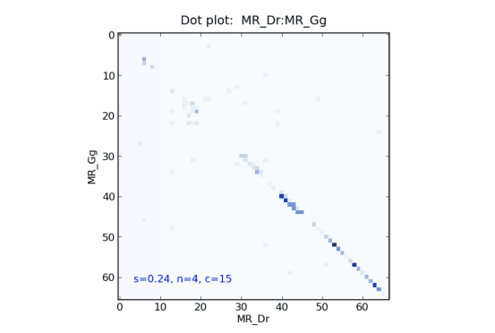

Protein sequences are often composed of regions that have distinct evolutionary histories as a consequence of domain shuffling, recombination, or gene conversion. New approaches are required to discover, visualize and analyze these sequence regions and thus enable a better understanding of protein evolution.
mosaic is a software application to visually analyze sequence relationships. The similarities between the sequences of a given set are displayed within a matrix (mosaic plot), which enables the visual identification of clusters of related sequences, outliers or other sequences with special properties. The software furthermore allows to drill down and to display dot plots of two sequences or conservation profiles over a selection of sequences. These dot plots illustrate where similarities between two sequences occur and the profile plots enable identification of commonly recurring subsequences.
The approach used by mosaic to generate these diagrams is different from traditional, alignment-based approaches. Instead of computing a (multiple) sequence alignment, mosaic utilizes short sub-sequences (n-grams) to measure the similarity between sequences. The advantages are two-fold. Firstly, the algorithm is faster and secondly it can deal with sequences that are difficult to align, e.g. due to domain rearrangement. The visualization is simple and intuitive, and repetitive or rearranged sequence regions can be easily identified. For more detailed information see References.
mosaic is started from the command line by calling
Usage: mosaic.py [options] filepath
Options:
--version show program's version number
-h, --help show this help message
-f FORMAT, --format=FORMAT input format: FASTA or PHYLIP
(default is FASTA)
-n N, --ngram_size=N n-gram size
(default is 4)
-t TYPE, --type=TYPE type of the Laplacian: L, Lnorm, Lsym
(default is L)
-r R, --radius=R radius of Gaussian kernel
(default is 0, meaning automatic)
-s FONTSIZE, --font_size=FONTSIZE font size for labels of mosaic plot
(default is 9)
-k, --black_labels black labels of mosaic plot
(otherwise automatic coloring)
-c C, --cell_size=C cell/grid size of dot plot
(default is 15)
-b --binary switches dot plots to black and white
-i, --no_fiedler suppress fiedler vector
-m, --no_mosaic suppress mosaic plot
-v, --verbose print status messages to stdout
For instance, the following command line call would create mosaic plots for all files ending with the extension ".ffa" in the folder "data". These files would be expected to contain sequence data in FASTA format. The sequence labels of the mosaic plot would be printed with a font size of 10 and the output of the corresponding Fielder vector would be suppressed.
mosaic.py -s 10 -i data/*.ffa
The filepath must be a path to an existing file or a folder that contains sequence data in FASTA or PHYLIP format (see option -f for format selection). The filepath can contain wildcards (e.g. "data/*.ffa") and mosaic will generate plots for all files that match the specified name pattern.
The default file format is FASTA format. Other file formats (currently only PHYLIP) can be specified via the option -f.
The default n-gram size is 4, which is suitable for amino acid sequences. For RNA and DNA sequences an n-gram size of 12 is usually a good choice. Generally, the more closely related the sequences are the larger should n be to discover differences between the sequences. The option -n allows to specify the n-gram size.
The Laplacian matrix for which the spectral decomposition is computed can be specified by the option -l. Per default the standard Laplacian (L) is used. Alternatively the normalized Laplacian (Lnorm) or the symmetric Laplacian (Lsym) may be used.
The spectral rearrangment is performed on an affinity matrix, which is derived from the distance matrix by applying a Gaussian kernel to emphazise the closer neighborhood of a sequence. The radius of the Gaussian kernel can be specified via the option -r. The default value is zero, meaning the radius is calculated automatically. Otherwise, 1.0 is a good start to experiment with different radi.
The size of the font for the labels of the mosaic plot can be set by the -f option. The default size is 9.
Depending on the prefix of the sequence name (specified in FASTA), mosaic automatically assigns the same label color within the mosaic plot for sequences that share the same prefix. The prefix is thereby separated by an underscore (_) from an arbitrary suffix. For instance, all sequence labels in the mosaic plot below, for sequences with names starting with AR_ are colored in green, while sequence names starting with the prefix PR_ are displayed in blue. The maximum number of different colors is 7. The automatic coloring can be disabled by setting the -k option.
Dot plots are usually displayed in a compressed form to allow better identification of regions with high sequence similarity. The compression factor
Specifying the -i option suppresses the display of the Fiedler vector and specifying the -m option suppresses the display of the mosaic plot.
The output of status messages within the console window can be enabled via the -v option.
This section provides a short example of an application of mosaic.
Running the batch file
The mosaic plot shows the rearranged affinity matrix of 36 steroid hormone receptor sequences. The color of every cell of the matrix visualizes the (n-gram) similarity between a pair of sequences. Dark colors mean high sequence similarity, while bright colors mean low similarity. Colors are ranging from white over yellow, orange and red to black.
The sequence set is composed of four families (AR, GR, MR, PR), which are clearly visible as four clusters (squares) of related sequences with high mutual similarity. Note that clustering of sequences based on an affinity matrix is a NP-hard problem and an optimal solution can be found in reasonable time only for small sets of sequences. mosaic utilizes the spectral clustering approach, which usually leads to a good clustering but does not guarantee an optimal solution.
(Abbreviations: “AR” androgen receptor, “GR” glucocorticoid receptor, “MR” mineralocorticoid receptor, “PR” progesterone receptor, “Bt” Bos taurus, “Dr” Danio rerio, “Ec” Equus caballus, “Gg” Gallus gallus, “Hs’ Homo sapiens, “Md” Monodelphis domestica, “Mm’ Mus musculus, “Pt” Pan troglodytes, “Xt” Xenopus tropicalis)
The command line option -i in the previous example suppressed the output of the fiedler vector. Typing
Note that the steps within the Fiedler plot correspond to the clusters within the mosaic plot. The Fiedler vector allows the user to objectively assess the quality of the clustering and the relatedness of clusters. For instance, from the Fiedler plot it becomes obvious that the sequences of the GR family are much more closely related to the sequences of the MR family than to the members of the AR family.
The Fiedler plot for steroid hormone receptor sequences shows four distinct steps for the four families indicating that the clustering is robust. You may also notice that the stepping pattern is disturbed for Zebrafish (DR) and Frog (Xt) sequences (indicies: 0,8,9,17,26,35), which are known to be only distantly related. These sequences show low similarity scores in the mosaic plot as well.
The color of each cell within the mosaic plot represents the overall n-gram similarity between two sequences. Frequently, however, a more detailed analysis is required and the regions of high or low sequence similarity between two sequences need to be identified. The dot plot enables this type of analysis.
Clicking (left mouse button) while holding the CTRL-key on a cell within the mosaic plot opens the corresponding n-gram dot plot that indicates the positions of matching n-grams between the two sequences. Two identical sequences would result in a plot with one main diagonal. The following dot plot compares the mineralocorticoid receptor (MR) sequences for zebrafish (Dr) and chicken (Gg). It shows a high density of matching n-grams in the second half of the sequences, specifically in the conserved regions of the zinc-finger domain and the ligand binding domain.
The overall n-gram similarity is 0.24 (s=0.24) for an n-gram size of 4 (n=4). The dot plot is compressed by a factor of 15 (c=15), meaning that the color of each dot is computed by summing the dots across 15 cells of the uncompressed dot plot matrix. Dots within the compressed dot plot therefore represent the density of matching n-grams within small regions and allow a better identification of regions with high similarity.
To investigate the sequence similarity of more than two sequences in more detail, mosaic provides an n-gram based sequence profile. Similar to traditional profiles derived from a multiple sequence alignment, the profiles in mosaic display an indicator value for the conservation of sequence regions within a set of sequences. For details see References.
Dragging the mouse pointer over a section of the mosaic plot (by the left mouse button and the CTRL-key) brings up the n-gram conservation profile, calculated over all sequences within the selected area.
The following plot shows the n-gram conservation profile over all 36 steroid hormone receptor sequences. The highly conserved DNA-binding domain (DBD) and the more-variable ligand binding domain (LDB) common to these sequence can easily be identified. Considerably less conserved but still visible is the transaction function domain (AF-1).The following software components are required to run mosaic:
For background information see the following links:
The installation of Python and the correct versions of compatible Python libraries can be difficult and time consuming. The simplest solution is the installation of the Enthought Python Distribution (EPD) that contains Python and all required libraries in a single package. The EPD can be downloaded from here.
mosaic has been developed under Windows XP using Python 2.5. In principle, mosaic should run under all platforms that support Python 2.5 or higher and a compatible PyLab library but no tests for other platforms or versions of Python have been performed.
Occasionally the software throws an exception when plots such as the mosaic plot or the dot plot are closed. This appears to be a problem of the underlying matplotlib library and is not caused by the mosaic software application itself.
Zooming into an mosaic plot does not show sequence labels on the axes.
| Version | Date | Comment |
|---|---|---|
| 1.06 | 08.04.10 | Paper references updated |
| 1.05 | 15.01.10 | Refactoring of code and additional commenting. Problem with new line characters when loading FASTA files created under Unix/Mac fixed. |
| 1.04 | 05.01.10 | Option -r added to set radius of Gaussian kernel for affinity matrix calculation |
| 1.03 | 09.11.09 | Option -b added to display dot plots in black and white |
| 1.02 | 26.10.09 | Psycho support added. Only used when installed. |
| 1.01 | 15.10.09 | Option -f added |
| 1.00 | 08.10.09 | First public version of mosaic |
| Name | |
|---|---|
| Stefan Maetschke | s.maetschke@uq.edu.au |
| Karin Kassahn | k.kassahn@uq.edu.au |
| Mark Ragan | m.ragan@uq.edu.au |
Stefan R. Maetschke, Karin S. Kassahn, Jasmyn A. Dunn,
Siew P. Han, Eva Z. Curley, Katryn J. Stacey, Mark A. Ragan
A visual framework for sequence analysis using n-grams
and spectral rearrangement
submitted, Bioinformatics, 2010
mosaic: Supplementary material